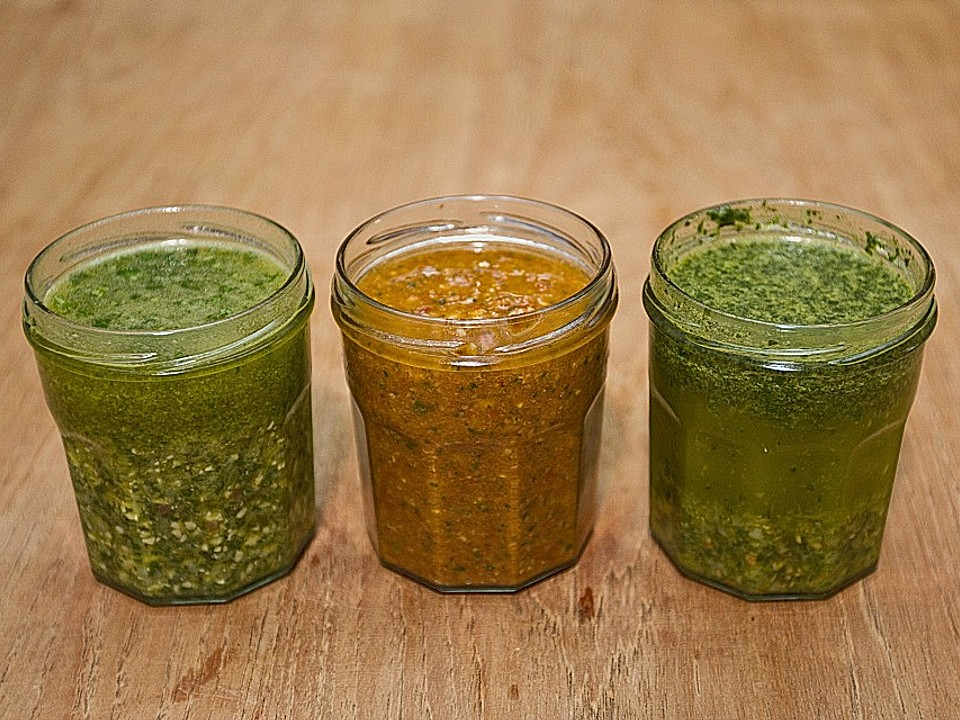

Pesto

Description
Pesto alla genovese.
Ingredients
- 1 Bund Basilikum, gezupft
- 120 ml Olivenöl
- 1 kleine Knoblauchzehe(n), gepellt
- 60 g Parmesan, frisch gerieben
- 30 g Pinienkerne, geröstet
Steps
- Basilikum, Olivenöl und Knoblauch im Mixer oder mit dem Pürierstab zerkleinern.
- Dann die Nüsse und den Käse zufügen.
- Das Pesto gegebenenfalls abschmecken.
- mit Salz und Pfeffer noch etwas nachwürzen.